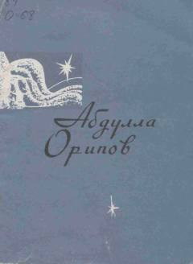

MYAbdulla Oripovning qalblarga yaqin lirik she'rlar to'plami.
Ushbu to'plam taniqli o'zbek shoiri Abdulla Oripovning eng sara she'rlarini o'z ichiga oladi. Kitob muallifning lirik ijodini, jumladan, "Onamga xat" va "Munojotni tinglab" kabi mashhur asarlarini jamlagan bo'lib, o'zbek she'riyatining durdona namunalaridan hisoblanadi.